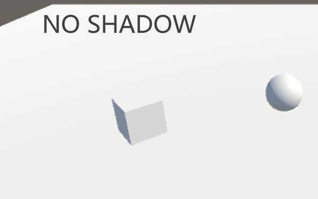
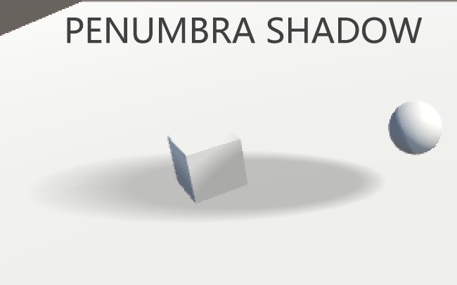
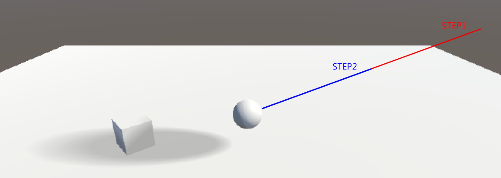
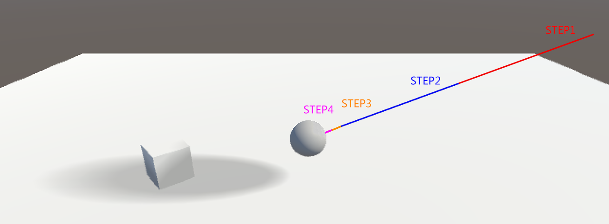

Sign Distance Field Learning 2
2017-6-3
参考 Kosmonaut 的这片文章 SIGNED DISTANCE FIELD RENDERING JOURNEY PT.1 实现一个最基础的 SDF Penumbra Shadow，目标是先把效果做出来，模型也使用了最简单的球体，这样可以避免一开始就陷入细节问题。下面是效果图：

这里总结下期中遇到的问题：
首先是生成 SDF Volume。SDF Volume 是对三维空间使用 Grid 进行划分，划分后的每一个 Cell 记录距离其最近的三角面的距离，如果在法线的同侧则为正值，在反面（法线的反方向）则为负值。我使用 Texture3D 来进行存储，对于这个 Demo 来说是最方便的，因为不需要考虑使用复杂的方式来存取数据，一切都是显而易见的，方便调试，采样纹理时硬件会自动进行插值。
有一点很重要，就是如何生成精确的 SDF 值，这个精确并非指数值上的精确，而是要和 Shader 中值计算进行统一。因为 Shader 中会获取 SDF Volume 中的值，以此来作为步进的距离。如果 SDF Volume 中的值偏大，那么 Penumbra Shadow 会稍稍的偏硬，这个问题不大，基本看不出来。如果 SDF Volume 的值偏小，那么会导致不正确的 Penumbra Shadow。这是由于算法 导致的，正常情况下几个大的步进就能完成 Ray Marching，但是如果 SDF Volume 中的值偏小，最后就需要几个小的步进来逼近目标点，如下图。当模型复杂后这种情况应该会更明显。而 ShaderToy 并不存在这个问题，因为其整个场景都是通过 Ray Marching 生成的，不存在引入 SDF Volume 后产生的误差。


然后就是生成 SDF Volume 的效率，目前是通过不断迭代，对于每一个 Cell，遍历所有的三角面找到距离最短的记录下来。以后改进时需要考虑空间划分和多线程，让其更高效。
目前为止就这些吧，对于一个 Demo 来说，目的达到了。下面需要不断深入的去理解每一个细节，计划先参考下 Unreal Engine 中这部分的内容。